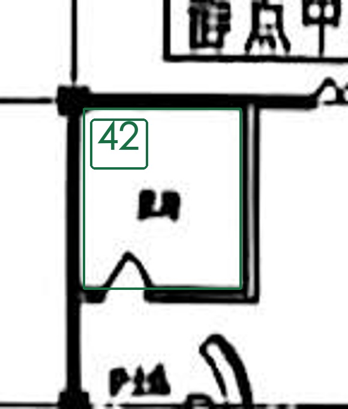
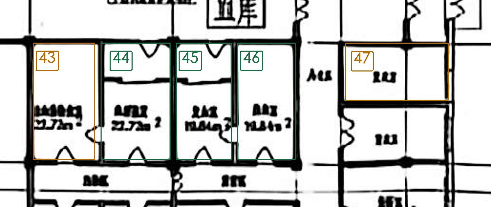

| 核对号 | S编号 | 预估名称（可改） | 备选名称 | 依据与把握 | 我的确认／备注 | 核对号（重复） |
|---|---|---|---|---|---|---|
| 42 | S077 | 医务 | — | 本轮照片08、10的本房原注可辨为“医务”，并与19号原图位置对应。类别：服务工作区。把握：高。已据图同步JSON/SVG；这不表示用户已经确认。 | 待确认 | 42 |
| 43 | S079 | 输血前检验室 | 输血前检查室 | 照片07、08、10可见输血前及室字；检验、检查的末字仍需核对，两候选共用此线索。把握：中。JSON保持unknown。 | 待确认 | 43 |
| 44 | S080 | 血型鉴定 | — | 本轮照片07、08、10的本房原注可辨为“血型鉴定”，并与19号原图位置对应。类别：检验。把握：高。已据图同步JSON/SVG；这不表示用户已经确认。 | 待确认 | 44 |
| 45 | S081 | 采血室 | — | 本轮照片07、08、10的本房原注可辨为“采血室”，并与19号原图位置对应。类别：检验。把握：高。已据图同步JSON/SVG；这不表示用户已经确认。 | 待确认 | 45 |
| 46 | S082 | 配血室 | — | 本轮照片07、08、10的本房原注可辨为“配血室”，并与19号原图位置对应。类别：检验。把握：高。已据图同步JSON/SVG；这不表示用户已经确认。 | 待确认 | 46 |
| 47 | S083 | 办公区／更衣室 | 暂无其他可靠候选 | 照片07、08显示现有S083轮廓内可能包含两个有名小间，名称及拆分范围需一并确认。把握：中。JSON保持unknown。 | 待确认 | 47 |